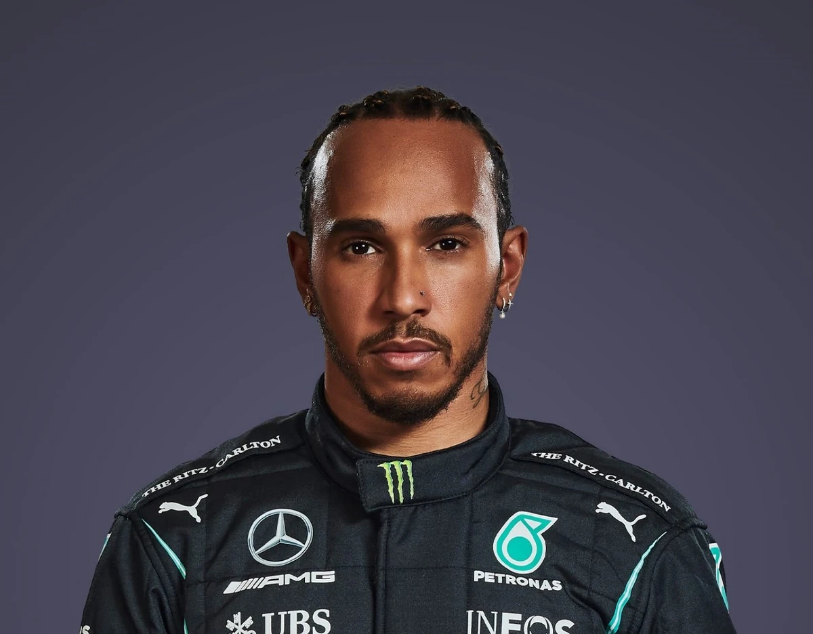

|

Nome completo - Lewis Carl Davidson Hamilton Nacionalidade - Britânico Nascimento - 7 de janeiro de 1985 (Stevenage, Hertfordshire) Altura 1,74m Temporadas - 2007–presente Equipes - 2 (McLaren e Mercedes) GPS Disputados - 316 Títulos - 7 (2008, 2014–15, 2017–20) Vitórias - 103 Pódios - 192 |